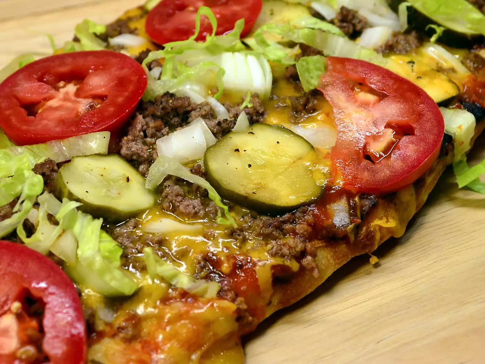

True Cheeseburger Pizza

Description
This is a unique twist on two favorites: pizza and cheeseburgers! It is super fast to make, and you can easily add your favorite burger toppings such as lettuce and tomato. This is a family favorite and disappears fast!
Ingredients
- ¾ pound ground beef chuck
- ¼ teaspoon salt
- ¼ teaspoon ground black pepper
- ⅔ cup ketchup
- 2 tablespoons prepared yellow mustard
- 1 (14 ounce) pre-baked pizza crust
- 1 ½ cups shredded mozzarella cheese
- 1 cup shredded sharp Cheddar cheese
- ½ cup chopped onions
- ½ cup dill pickle slices
- 1 cup shredded lettuce (Optional)
- 1 cup diced tomatoes (Optional)
Steps
- Preheat oven to 375 degrees F (190 degrees C).
- Heat a large skillet over medium-high heat. Cook and stir beef, salt, and pepper in the hot skillet until meat is browned and crumbly, 5 to 7 minutes; drain and discard grease.
- Mix ketchup and mustard in a bowl; spread mixture over pizza crust. Spread mozzarella cheese and Cheddar cheese over ketchup mixture and top with beef and onions. Transfer pizza to a large baking sheet.
- Bake in preheated oven until cheese is melted, about 20 minutes. Top with pickles and allow pizza to cool for 5 minutes. Top with shredded lettuce and tomatoes before slicing and serving.